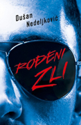
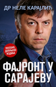
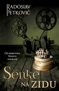

Headhunters
Ivana Mihić
Nesvakidašnji roman o povezanosti biznisa, politike i glamura. Headhunters je roman o specijalno obučenim „lovcima“ koji u džungli savremene civilizacije pronalaze najtraženiji korporacijski plen: vrhunske profesionalce koji kompanijama uvećavaju profit. Glavni likovi ovog romana, otac Obren i sin Filip, sa zavodljivom Minom Poleto između njih, vode agenciju Chemistry Biz Links, jednu od najmoćnijih u regionu.
Ivana Mihić
Nesvakidašnji roman o povezanosti biznisa, politike i glamura. Headhunters je roman o specijalno obučenim „lovcima“ koji u džungli savremene civilizacije pronalaze najtraženiji korporacijski plen: vrhunske profesionalce koji kompanijama uvećavaju profit. Glavni likovi ovog romana, otac Obren i sin Filip, sa zavodljivom Minom Poleto između njih, vode agenciju Chemistry Biz Links, jednu od najmoćnijih u regionu.
999.00

Rođeni zli
Dušan Nedeljković
Dvojica drugara iz detinjstva, Ivan i Bugi, haraju beogradskom marketinškom i poslovnom scenom dvadeset prvog veka namećući svoja prljava pravila jer im vreme i sistem to omogućavaju. Reklo bi se da ništa ne može ugroziti njihovo prijateljstvo i tesnu profesionalnu saradnju.
Dušan Nedeljković
Dvojica drugara iz detinjstva, Ivan i Bugi, haraju beogradskom marketinškom i poslovnom scenom dvadeset prvog veka namećući svoja prljava pravila jer im vreme i sistem to omogućavaju. Reklo bi se da ništa ne može ugroziti njihovo prijateljstvo i tesnu profesionalnu saradnju.
1199.00

Fajront u Sarajevu
dr Nele Karajlić
Fajront u Sarajevu je teško, pomalo bolno, svakako setno prebiranje po uspomenama jednog od Sarajlija koje su taj grad u Titovoj Jugoslaviji učinile posebnim. Novi primitivizam je Sarajevo izbacio iz zglobne čašice, učinio ga drugačijim, dao mu oreol avangarde, a najveća zvezda tog pokreta bio je dr Nele Karajlić.
dr Nele Karajlić
Fajront u Sarajevu je teško, pomalo bolno, svakako setno prebiranje po uspomenama jednog od Sarajlija koje su taj grad u Titovoj Jugoslaviji učinile posebnim. Novi primitivizam je Sarajevo izbacio iz zglobne čašice, učinio ga drugačijim, dao mu oreol avangarde, a najveća zvezda tog pokreta bio je dr Nele Karajlić.
1499.00
Iver
Oto Oltvanji
Pisac popularnih trilera Saša vodi devojku Miju, autorku dečjih knjiga i ilustratorku, na sever Vojvodine da je konačno upozna sa svojom porodicom. U pitanju nije bilo koja familija, nego Vitasovi – moćni klan umetnika, čije su četiri generacije muzičara, slikara, glumaca i književnika manje ili više vešti manipulatori koji vode računa o tome koga primaju u svoje okrilje.
Oto Oltvanji
Pisac popularnih trilera Saša vodi devojku Miju, autorku dečjih knjiga i ilustratorku, na sever Vojvodine da je konačno upozna sa svojom porodicom. U pitanju nije bilo koja familija, nego Vitasovi – moćni klan umetnika, čije su četiri generacije muzičara, slikara, glumaca i književnika manje ili više vešti manipulatori koji vode računa o tome koga primaju u svoje okrilje.
1199.00

Senke na zidu
Radoslav Petković
Roman Senke na zidu opisuje snove i lutanja zanesenjaka Ivana Vetručića koji na razmeđi 19. i 20. veka mašta o fotografiji i fimu. Putujući Evropom u vreme Prvog svetskog rata i početaka novonastale Jugoslavije, on sreće pripadnike Crne ruke, neuspešne umetnice, šarlatane i mistike.Roman koji pokretne slike dočarava rečima.
Radoslav Petković
Roman Senke na zidu opisuje snove i lutanja zanesenjaka Ivana Vetručića koji na razmeđi 19. i 20. veka mašta o fotografiji i fimu. Putujući Evropom u vreme Prvog svetskog rata i početaka novonastale Jugoslavije, on sreće pripadnike Crne ruke, neuspešne umetnice, šarlatane i mistike.Roman koji pokretne slike dočarava rečima.
899.00